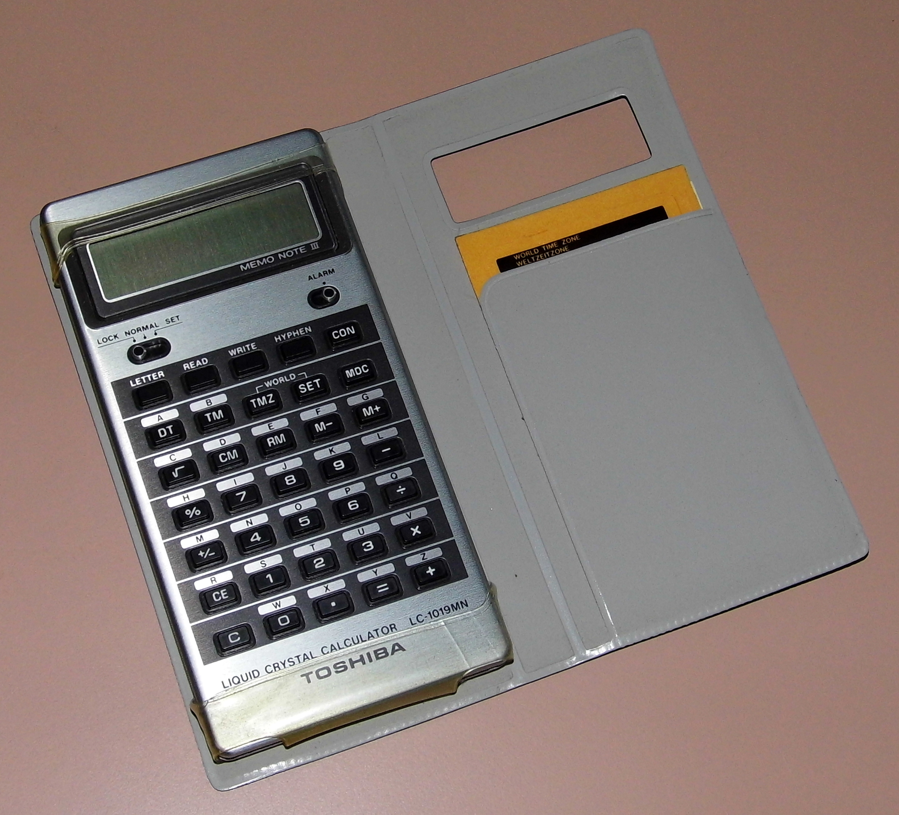

Toshiba LC-836MN Memo Note 30
The first portable electronic data bank — a calculator you type names into, one 8-segment character at a time

Overview
The Toshiba LC-836MN 'Memo Note 30' is a pocket calculator introduced in 1978 that doubles as one of the first portable electronic data banks. It uses an early two-chip Toshiba chipset: the T3690 microcontroller handles keyboard scanning, display driving, and calculation, while the T3691 provides storage for up to 30 information items, each holding six alphabetical characters and eight numerals — a total of 2,048 bits, or 256 bytes of carryable memory.
The interaction model is the point. There is no full keyboard. Text is spelled out character-by-character through the calculator's shared keys, one at a time onto an idiosyncratic eight-segment alphanumeric display — an eighth segment added beyond the standard calculator layout so that letters render legibly. The display's left portion reads 'MEMORY' while an item is shown. Radio Shack's manual suggested what to store: a person's name and telephone number, bank name and balance, name and date of birth, passport and license numbers, caloric values of foods, exchange rates, and golf scores.
Sold by Toshiba, by Radio Shack as the EC-4002, and by Hanimex as the SLC 891, the Memo Note 30 predated Texas Instruments' first Mini Data Bank by roughly nine years; Canon's LC-MEMO databank (also 1978) was a slightly smaller alternative. It stands as the ancestor of the organizer genre.
Deep dive
The Memo Note 30 confronts the visitor with a calculator and asks them to reverse-engineer that 'D-A-V-E' is entered across a single shared keypad, one segmented glyph at a time. Text entry is not delegated to a keyboard; it is squeezed through the same keypad used for arithmetic, cycling letters onto the eight-segment display. The eight-segment arrangement — an unusual eighth segment added to the standard calculator glyph set — exists purely to make letters readable. Data entry as constraint: the interface's limitation is the artifact's defining texture.
Storage is a raw array of 30 slots, each exactly six alphabetical characters and eight numerals wide. Names and phone numbers are fitted into this grid. There is no search, no index tree — navigation is scanning the 30 memory positions. The fixed-size slot model makes literal the idea of a 'data bank': a finite grid into which you deposit compact records.
Toshiba's history (compiled by the Datamath Calculator Museum's Joerg Woerner) states the LC-836MN was nine years ahead of the first Mini Data Bank sold by Texas Instruments. Its successor, the LC-1038MN, added an alarm clock, and Canon's LC-MEMO offered a smaller alternative the same year. This chronology matters: the museum's organizers (Sharp Wizard, Psion, Casio PB-1000) all sit a decade later in a more comfortable, keyboarded form; the Memo Note 30 is the machine that first proved people would want to carry electronic memory at all.
The Memo Note 30 joins the collection's electronic-organizer and information-appliance family as its earliest, most constrained member — the rough ancestor against which the Sharp Wizard (1989) and Psion Organiser II (1986) can be read as resolutions. It directly foreshadows the Sony Data Discman and Craig M100 but predates them all, and its calculator-as-host form factor is unique in the collection.
Team & pioneers
- Toshiba. Engineered and marketed the LC-836MN Memo Note 30, with an early two-chip T3690/T3691 chipset.
- Radio Shack. Rebadged and sold the Memo Note 30 as the EC-4002, with a manual suggesting everyday uses.
- Hanimex. Rebadged and sold the Memo Note 30 as the SLC 891.
Media
